@momo · IP: 广东
用DeepSeek算了一下八字，说今年运势特别好！有没有人试过？准不准啊？
❤️ 2.3k 💬 586 🔄 329
从失业焦虑到AI算命，从边缘话题到百亿赛道——
一项关于"确定性"的时代调查
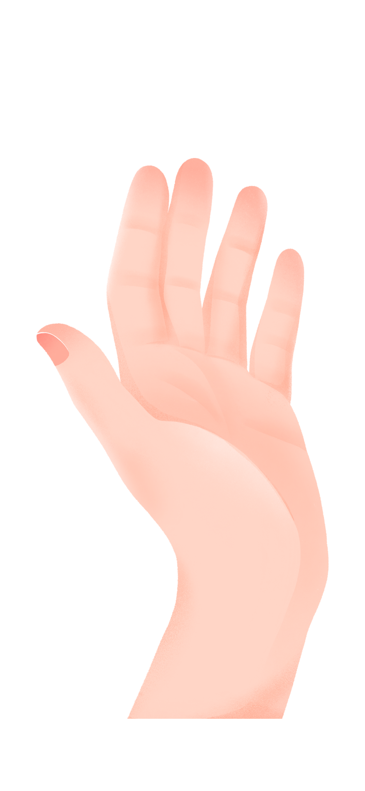
2026年3月，上海。26岁的林晓已失业满一年。过去一年，她投递了上百份简历， 多数石沉大海；整个3月，她连一封有效的面试邀请都没收到。焦虑中， 她在社交平台看到不少人分享AI算命经历，于是她打开了刚下好的AI算命软件……


小林打开市面上流行的算命app，尝试向AI提问："请你用最靠谱的方式，测算我何时能拿到满意offer。"
AI的回答给出了明确时间节点：农历三月，你的人生将会迎来转机，4月10日前可获正式录用通知，5月15日前可入职；同时提示，4月面试机会将明显增加。你其实是个很要强的人，能扛得住事，只是暂时缺少一个时机。
此后的一个多月，林晓每天起床第一件事情就是打开AI查看运势，面试前也会反复确认"吉凶"运势。她习惯将AI预测截图保存，手机壁纸也换成了AI生成的"offer好运图"。
AI算命走红：从边缘话题到百亿赛道
AI的回答给出了明确时间节点：农历三月，你的人生将会迎来转机，4月10日前可获正式录用通知，5月15日前可入职；同时提示，4月面试机会将明显增加。你其实是个很要强的人，能扛得住事，只是暂时缺少一个时机。
1996年到2003年的7年间，中国科学技术协会曾就算命进行过三次调查，结果显示，每四个中国人里面，至少有一个人相信算命，总人数超过3亿人。
二十多年后，中国的算命用户也并没有减少。2024年中国AI玄学（含AI算命）市场规模已突破120亿元，年增长率达43.7%。
一个值得注意的变化藏在数据里：仅体验一次的用户占43.1%，而每天使用一次或多次的用户高达47.41%。将"仅体验一次"与"每日使用"两组数据并置，一个行为层面的跃迁清晰可见——AI算命已从一次性好奇，转变为日常化依赖。
这一转变的底层逻辑并不复杂：AI降低了算命服务的获取门槛（免费、即时、匿名），同时放大了"确定性输出"的心理安慰功能。
"星座罗盘"以41.7%的占比位居榜首；"塔罗牌占卜"占比36.4%紧随其后，两者合计占比超七成。而"周公解梦"、"姓名测命"、"手相测命"等中式传统算命方式占比则相对分散，均未超过25%。
AI对中式命理和西式占卜的训练数据均可供给，差异的根源或许在于传播生态。星座、塔罗在新媒体平台拥有更成熟的创作者生态、更低的认知门槛和更"轻"的使用体验，更容易嵌入碎片化的数字生活。而中式命理涉及八字排盘、五行生克等知识体系，学习曲线较陡，AI化后仍带有较重的"专业门槛感"。
用DeepSeek算了一下八字，说今年运势特别好！有没有人试过？准不准啊？
AI算命背后的用户画像
林晓从未走进线下命理馆，也未预约过心理咨询。线下占卜单次收费数百至千元，心理咨询价格更高，她需要对着一个陌生人倾诉自己的失业困境，这种方式带来的窘迫感令她难以接受。专业心理服务的高门槛，使她转向了这个更隐蔽、低成本的情绪出口。
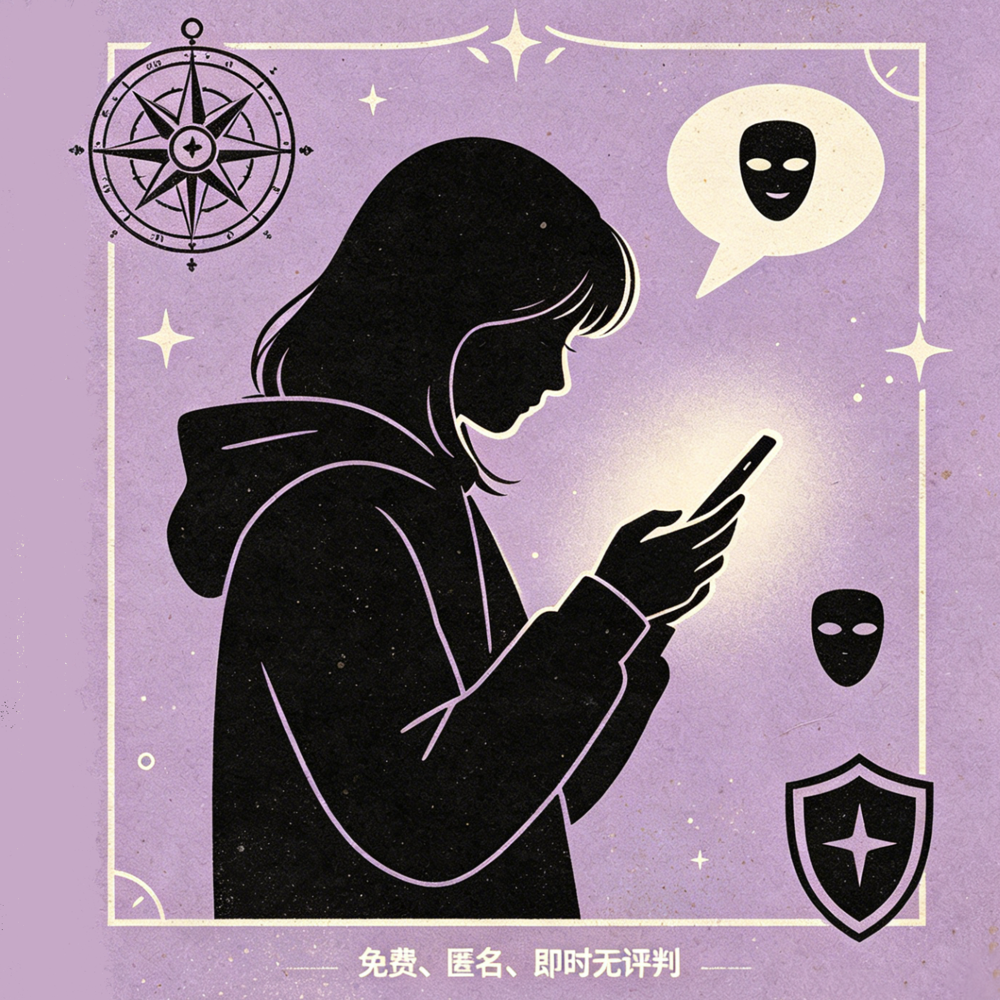
AI算命恰好完美契合了她的核心诉求：免费、即时、匿名、无评判。无需预约、无需暴露身份，深夜情绪崩溃时也可随时获得回应；基础功能零成本，无需担心经济负担。她并不认为AI"更准"或"更客观"，她只是需要一个安全、无压力的表达空间。
赛博玄学的用户以女性为主（77.5%），年龄集中在95后、00后、90后（合计88.3%）。赛博玄学的使用群体主要集中在年轻群体，随着时代发展，年轻人已经习惯将玄学作为一种精神寄托之一。
女性心理压力（35.9%）高出男性（25.6%）10.3个百分点。两组数据叠加指向一个事实：AI算命的主要使用者，恰恰是感知心理压力更高的群体。
💬 用户们为什么选择AI算命？
👆 点击任意气泡查看真实想法
基于AI算命的青年压力调查
失业一年，积蓄递减，房租压力；每每与母亲通电，她总是习惯性谎称自己"工作顺利、一切都好"；朋友圈里，同龄人有的升职，工作稳定；有的结婚，生活安定，而自己却仍停滞不前。这种落差与不确定感，给她带来了持续的心理内耗。
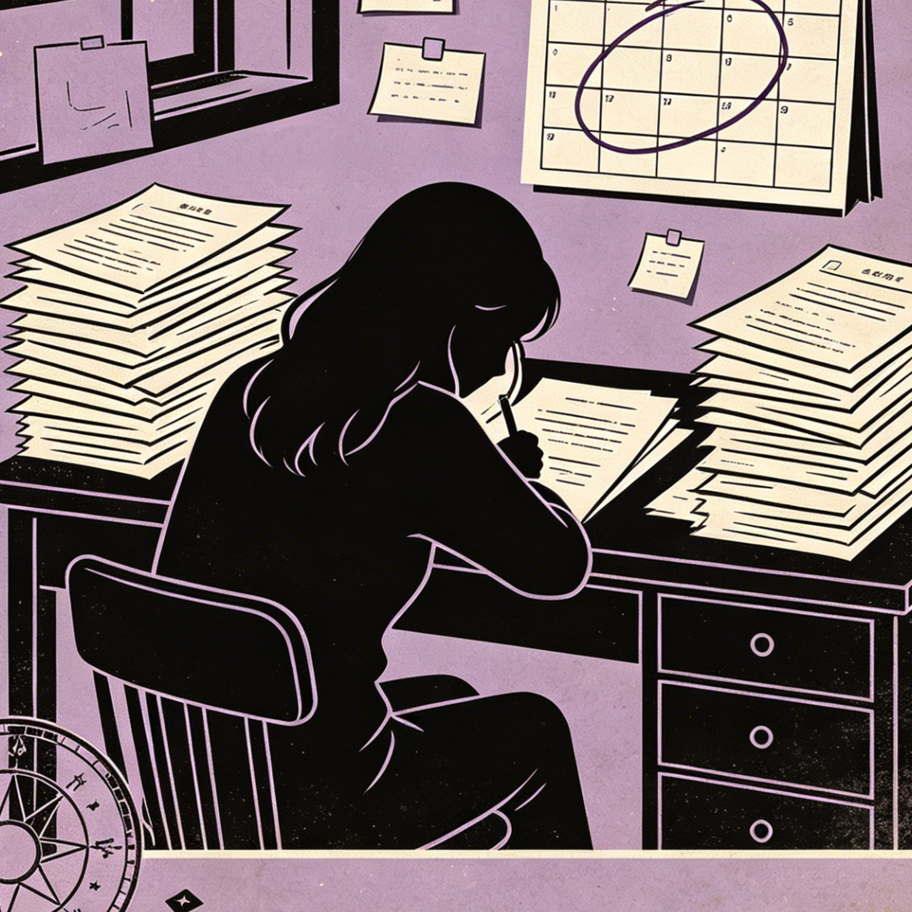
林晓的焦虑，并非来自某一次事件的失败，而是来源于长期对生活的失控感。当现实世界的不确定性遭遇经济下行周期，年轻人正在虚拟世界寻找确定性寄托。AI算命提供的"未来预览"功能，本质上是对抗焦虑的心理缓释剂。
在我们的问卷中，97%的青年能感知到身边存在压力，62.8%处于中高压力状态。每4人中就有1人出现焦虑症状，每2人中就有1人存在抑郁风险。这些数字并非一线城市的专属标签——二三线城市乃至其他地区的青年，中高压力比例同样超过50%。
青年压力源呈现多元且集中的特点，平均每人拥有4.8个压力源。排名前三的分别是：对未来缺乏掌控感（41.9%）、对现状不满（41.6%）、考试/竞争压力（31.9%）；其中同辈压力（28.3%）尤为突出，甚至高于就业压力。
超七成青年在压力下产生焦虑情绪，焦虑引发普遍的拖延和逃避行为。这一代青年的焦虑水平正在迅速上升，和其他年龄段相比，18-34岁的青年焦虑水平最高。和其他时代相比，近年来全球精神健康疾病急剧上升，焦虑症增加63%。
在青年压力源排名中，"对未来缺乏掌控感"占41.9%，"对现状不满"占41.6%，两者合计超过八成。AI算命提供的"未来预览"——无论其准确性如何——恰好回应了这种"掌控感缺失"。用户不需要一个真实准确的预言，只需要一个"确定的答案"来缓解当下的不安。
🔮 此刻的你，是什么心情？
AI算命背后的逻辑——巴纳姆效应与模式匹配
用同一手部照片、同一环境，在同一AI看相平台重复测试5次，5次结果完全不同。林晓自行验证，连续三次向AI提问同一问题，回复细节亦存在差异。
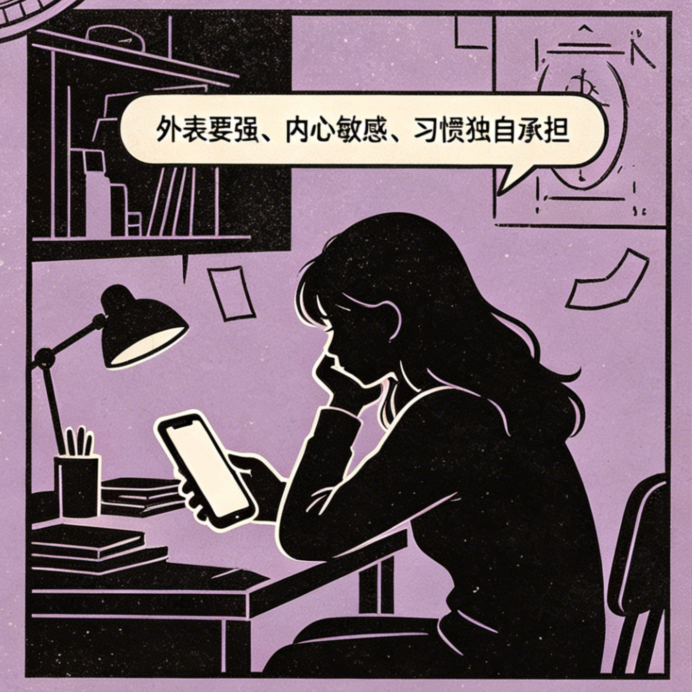
AI本身不具备命理推理能力。AI算命的底层机制，是大语言模型对训练数据中的命理文本进行学习与概率性组合。用户输入的提问格式越详细，AI输出的"个性化"程度越强，但这种个性化并不以命理学的准确性为前提——它只是模型的模式匹配与文本生成。
南都记者2019年调查显示：用同一手部照片、同一环境，在同一AI看相平台重复测试5次，5次结果完全不同。林晓自行验证，连续三次向AI提问同一问题，回复细节亦存在差异。
根据我们的问卷调查，超过85%的使用者认为较为笼统的描述贴合自己的实际情况。AI算命"准"的感知，很大程度上可以通过巴纳姆效应来解释：人们倾向于将笼统的、普适性的描述当作高度吻合自己的专属判断。
"你表面坚强，但其实内心很需要被理解""你最近有些困惑，正在思考人生的方向"——这类描述几乎对每个人都成立，但用户会自发地"对号入座"。
AI技术并未改变这一心理机制，但放大了其效率和覆盖面。与传统算命师不同，AI可以24小时在线、无表情偏见、语言风格可定制，并且能够根据用户输入的关键词自动生成更"贴合"的回复。
用户寻求AI算命的原因中，"缓解压力和焦虑"以74.1%居首，远超"寻求解释"等理性诉求。这说明AI算命的核心功能不是"预测未来"，而是"管理当下情绪"。与此同时，专业心理服务的使用率仅为7.4%，用户对现有情绪应对方式的满意度仅3.35分（满分5分）。
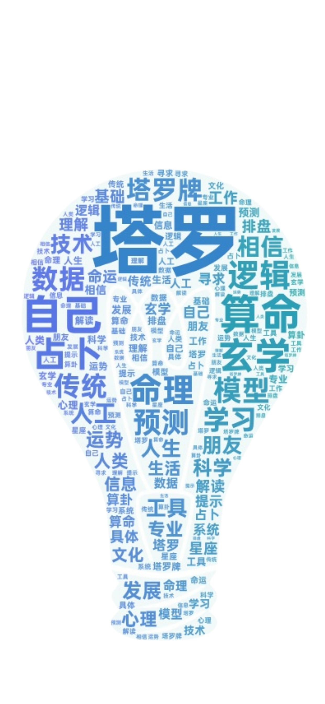
知乎词云
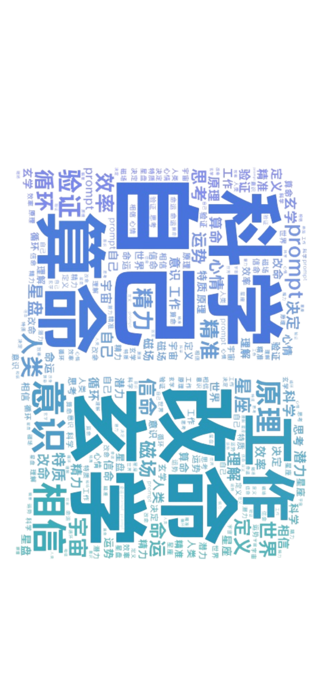
小红书词云
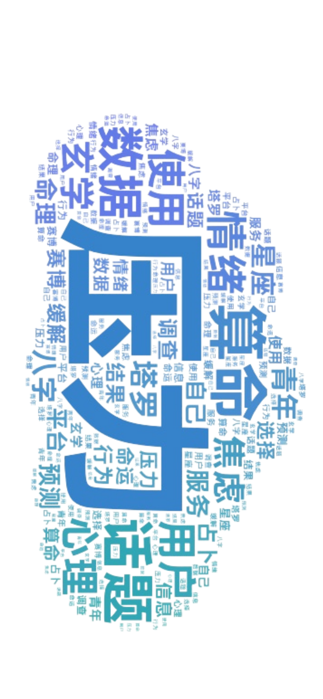
B站词云
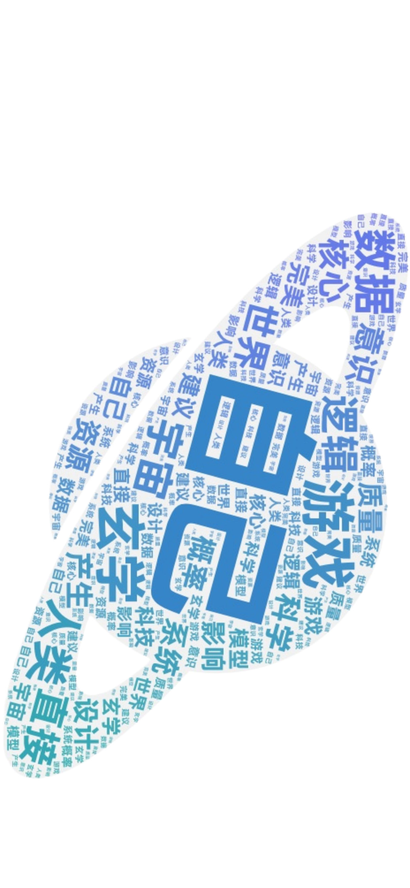
贴吧词云
🎰 恭喜！你被抽中为今日幸运用户
完成信息填写即可领取专属命理报告 + 神秘好礼
🏆 奖品池
一等奖：开光水晶手串 ×1（价值¥1,288）
二等奖：大师八字详解 ×3（价值¥688）
三等奖：AI周运势会员 ×10（价值¥198）
📱 中奖后将有专属顾问电话联系您领取
选择你想了解的运势方向（可多选）：
已有 3,287 人领取 · 仅剩 2 个名额
情绪支持与信息风险导向
上海一位用户分享了她求职一年屡屡碰壁时的真实体验。她向AI对话工具请求"预测拿到offer的时间"，AI用命理术语给出了明确的、带有积极暗示的回答。她坦言这份"确定性"让她重新有了求职的底气，最终在4月拿到了满意的offer。
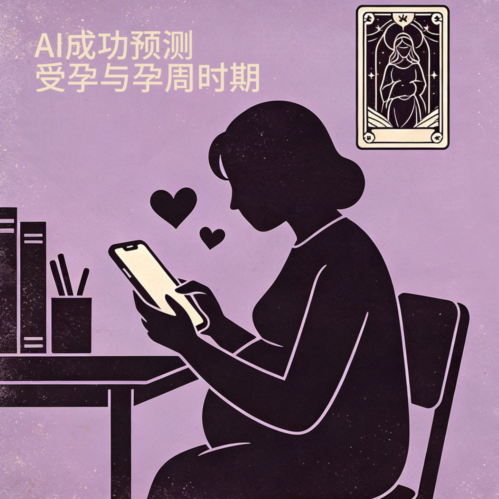
一名重庆网友在备孕阶段向AI发起包含八字、奇门遁甲的"怀孕预测请求"，AI不仅做出了预测，还与其"定下赌约"。最终验孕棒显示阳性后，她晒出结果并感叹："比起预测结果本身，AI对话带来的积极心理暗示和情绪陪伴，帮我缓解了备孕过程中的不安与压力。"
5.15%的用户选择"明显缓解"，51.55%的用户选择"有轻微缓解，能短暂放松一下"——合计过半。与此同时，29.9%选择"几乎无影响"，3.09%选择"反而加重焦虑"。
⚠️ 数据安全警示：
占卜网站WeMystic在2023年11月因操作失误泄露1330万条用户敏感数据，涉及姓名、性别、出生年月、IP地址等。
消费诱导层面："测测"App被315曝光，有用户被诱导消费近30万元；平台通过"新人免费券引流—虚拟货币模糊计价—诱导免密支付自动扣费"的方式层层设套。
输出可靠性问题："微算面相"的5次测试得出5次不同结果，表明部分AI算命产品存在输出随机性。
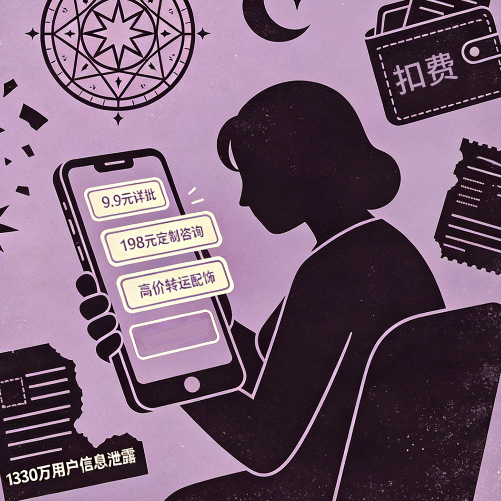
从问卷数据来看，目前接触AI算命的用户多数不愿意为AI算命功能付费（76.29%选择"只使用免费功能"）。
AI算命不仅仅是一种情绪出口。从商业视角看，它的变现链条极其清晰：免费引流 → 制造焦虑 → 付费解锁。
这些数字说明，情绪服务已经被市场明确定价。值得注意的是，AI技术本应降低算命服务的边际成本，但实际客单价并未下降，反而在高端定制服务中上升。原因在于：AI算命完成了一次产品定位的转换，从"信息查询"转向"心理服务"。用户支付的费用，不是为命理结论付费，而是为"被倾听、被理解、被安抚"的情绪体验付费。
🤖 AI情感助手
请选择此刻最困扰你的一件事：
基于AI算命走红的思考
进入4月，林晓陆续收到面试邀约，与AI"4月机会增多"的判断吻合。每次面试前，她翻看AI预测截图平复紧张；4月9日，她收到心仪公司终试通过通知；4月10日，正式offer准时送达。
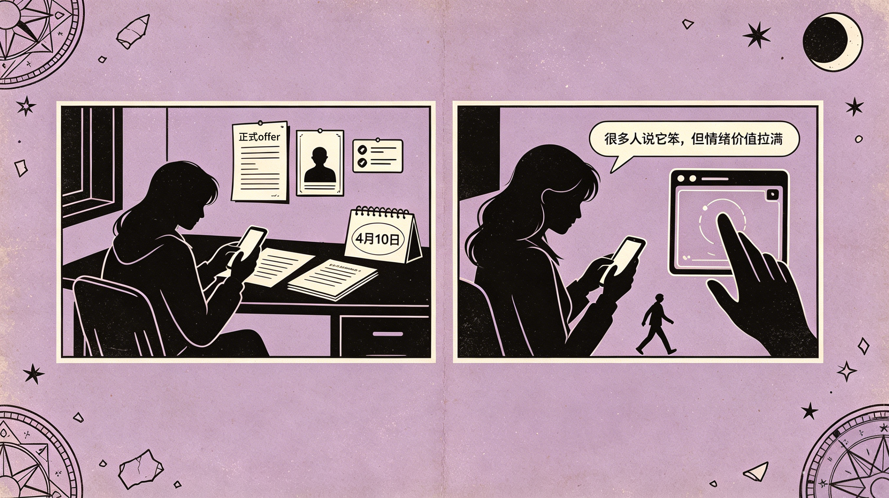
林晓内心清楚，offer来自三个月打磨三版作品集、复盘每一次面试、主动跟进HR的持续努力，而非算法预言。AI的作用，是在她自我怀疑、濒临放弃时，提供一句"再等等，会好的"，让她有力量继续走下去。
她保持警惕，从未付费、从未提交过真实信息。她承认，算法文字未必可信，但在低谷期，这种低成本情绪支撑，确实帮自己扛过最难熬的日子。
"算法可以制造确定性幻觉，却无法替代真实行动。
真正能改变人生的，永远是那些在迷茫中依然迈出的脚步。"
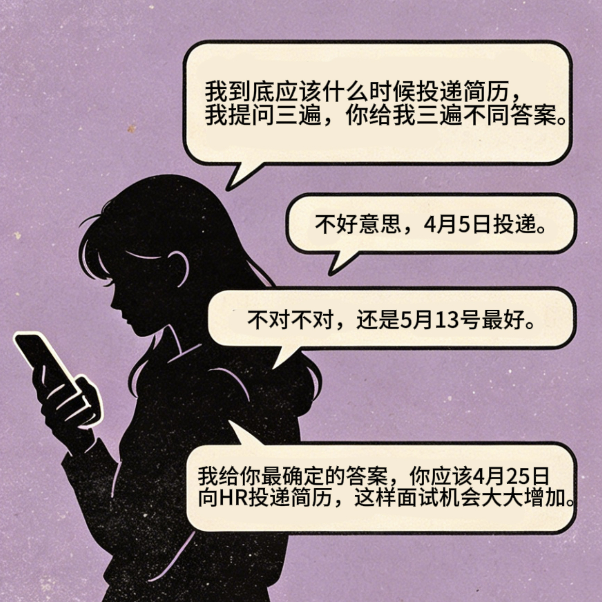
从数据上看，AI算命为相当一部分年轻人提供了一个低门槛、即时可及的"情绪缓冲带"。它不是什么神秘的技术，也不是什么愚蠢的迷信，而是一种在特定社会心态和压力结构中自然生成的产物——当不确定性普遍上升，人们会从任何可及的渠道中寻找确定感。
在我们的问卷中，当被问及"感到压力或焦虑时，使用AI算命能在多大程度上缓解情绪"时，5.15%的用户选择"明显缓解"，51.55%的用户选择"有轻微缓解，能短暂放松一下"——合计过半。与此同时，29.9%选择"几乎无影响"，3.09%选择"反而加重焦虑"。
值得注意的是，约66%的用户主动意识到过度依赖AI的风险。用户对风险的觉知，与AI算命的使用行为之间，始终存在一条待审视的边界。
真正需要回答的问题只有一个：
在AI可以模拟共情、制造"确定性幻觉"的时代，
人们如何区分"被安抚"与"被误导"？
在算法与命运之间，最终的决策尺度仍然是人——在压力中做出选择的你。
数据来源：
• 自采问卷：于2025年面向全国青年群体发放，回收有效问卷120份，覆盖19个省份
• 公开统计报告：艾媒咨询、西安欧亚学院文化传媒学院新传工坊、网易数读、《2025中国青年压力调查报告》、《2026青年情绪白皮书》、《中国国民心理健康报告》、《全球疾病负担研究报告》等
• 公开报道与案例：澎湃新闻、南都记者调查、黑猫投诉平台数据、WeMystic泄露事件通报、315曝光案例等
• 平台数据：社交媒体平台AI算命相关话题热度、讨论量、用户评价分布等
• 访谈/案例：来源于公开社交平台用户分享，经核实整理